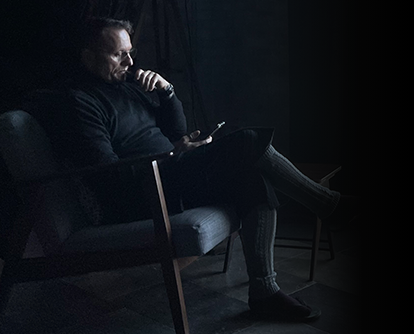
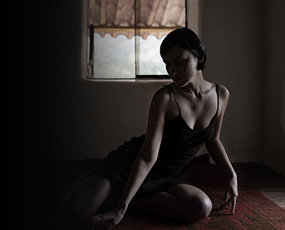
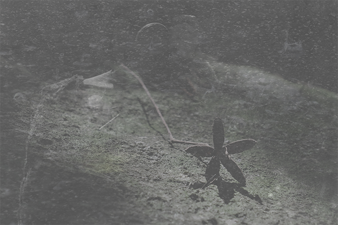
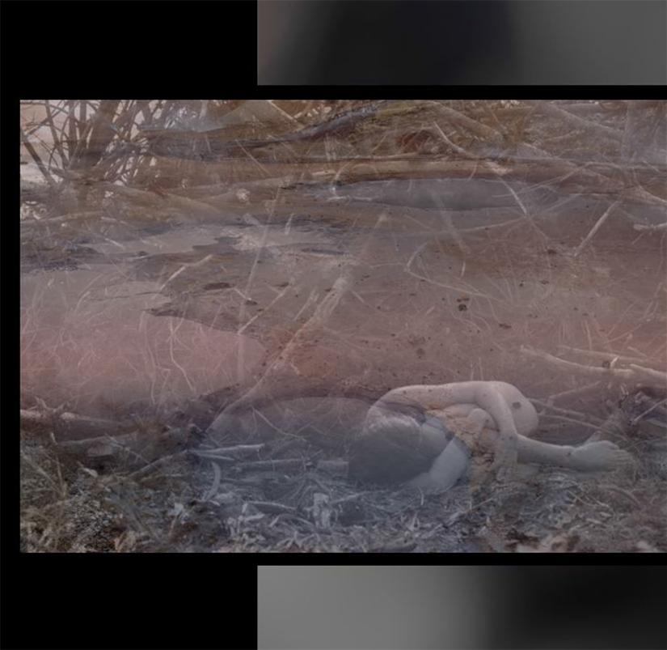
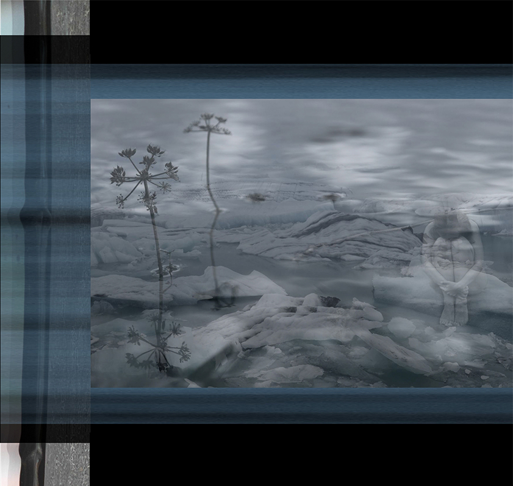
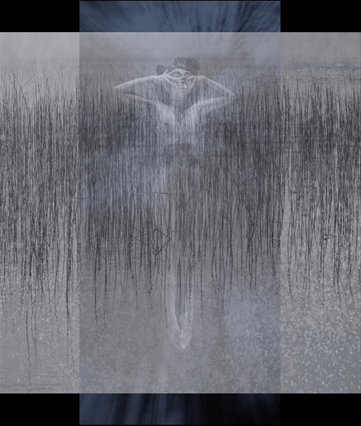
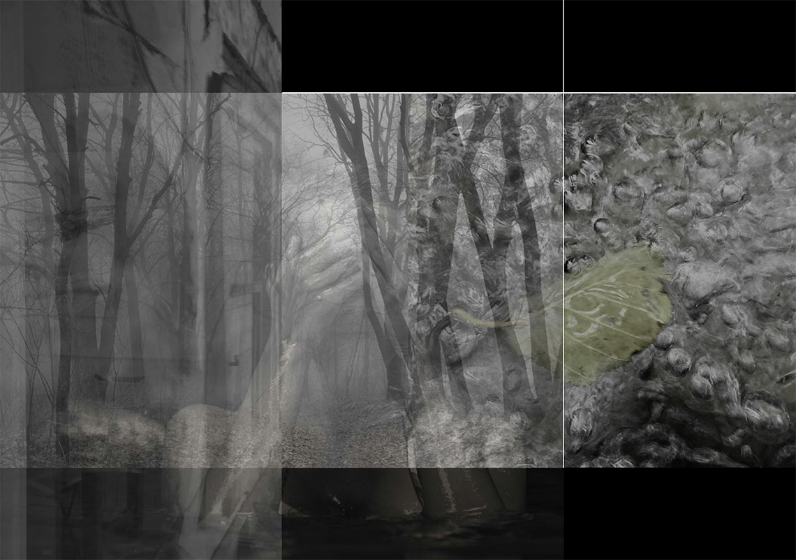
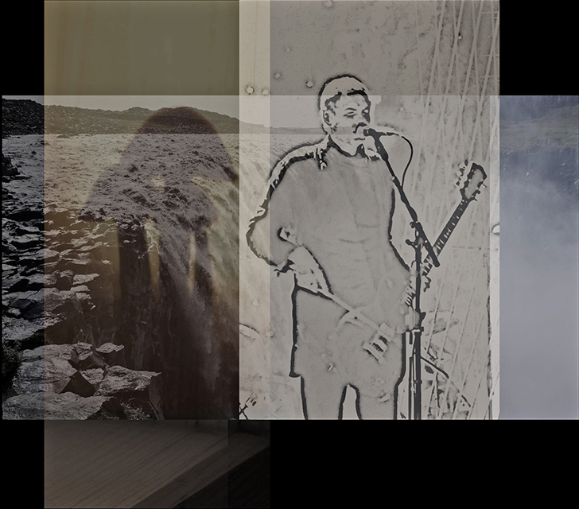
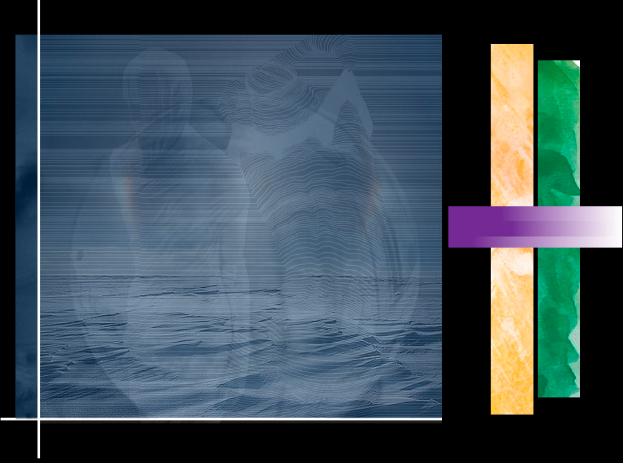

No one is anything but conscious by being human in kind. One takes either what one is given or else one has
but no other choice than remaining eternally betrothed to blind love. Born from attachment and propagated by
the effect of its own cause, the anguish that fuels and feeds blind love is passed down over the ages under
the aegis of power, profit and prestige; the mirage, malaise and imago dei of “me, my, mine”...
Each and every one comes but to be in relationship. No one is self-caused nor self-made. Consciousness; the
corpus, consonant and cosmos of phenomena, is anything but a romantic mythology, religious matriarchy or a
reasonable monarchy. Selfless as love, consciousness is integral; irreducible to this godhead or that
genome; this quantum equation or that mother nature; this solstice or that articulation...
To be conscious is the virtue of each and every human being. Virtue has no value and, as such, is
acknowledged neither in the positive nor the negative but in the affirmative. The affirmative acknowledges
what is; namely that no one is greater or lesser than, united with or divided from coexistence that links
organic, sentient, human and unbeknown life into the integral whole of consciousness...
Not everyone is equally conscious any more than anyone is one and the same as another while no one can decry
to be conscious who has any say. To face and embrace oneself upfront and personal in the here and now is
what everyone can do but which mostly no one does by being too occupied with seemingly more important stuff.
To rise up and out from the battlegrounds of blind love is but the only choice any human of any kind has up
today...
To face the mirage and malaise of self-talk, make-believe and tunnel-vision, enthogenica collaborates
with psychoactive compounds to bring the blended and blotted out into awareness. To be given rather than
taken, to understand psychoactive compounds is just as illusionary as meaning making. The infinite
remnants of impermanence, to take psychoactive compounds on one’s own behalf merely fans the flames of
“me, my, mine,” because “only in relationship do you see the face of what is” ...
Personal as desire, interpersonal as relationship and transpersonal as the sounded breath of speech, to
confront oneself in the here and now under the influence of psychoactive compounds, makes for grace,
grit and gratitude. Not re-, pro-, nor co-creational but as vulnerable as any genuine intercourse, to
rise up and out from blind love is only taken into consideration after the ecstasy of pride, prejudice
and possessiveness has been met by the agony of having no control, choice nor any say over the flex and
flow that drives life’s preciousness and makes for death’s presence: evolution...
To surface out and up from the imago dei of self-projected imagination and identification, follows the
same trajectory, as thus noted: “If you want to shrink something, you must first allow it to expand. “If
you want to get rid of something, you must first allow it to flourish. If you want to take something,
you must first allow it to be given. This is called the subtle perception of the way things are” ...
Conducted by Tetiana & Christoph who guide and ground enthogenica’s process that last anywhere from
eight to a maximum of ten hours, to face and embrace oneself upfront and personal in the here and now
brings but the rainbow and waterfall of courage and faith, support and challenge, surrender and
affirmation to the fore: the witnessing of love...
None other than awareness, love is but the consort and concubine, the concomitant other of
consciousness. What is consciously faced and done is embraced no differently by the witnessing of love.
To engage in enthogenica’s process depends but on the same condition as the life each and every human is
given: to look and listen into rather than turn away and tune out from what is encountered and
communicated in the wake of being present...
No one turns to ashes and dust post-mortem but the body any more than anyone can “step into the same
river twice, for fresh waters are ever flowing in upon you.” No one leaves here to go to heavenly
paradise or nirvanic pure land, because there is none other than the integral whole of consciousness
from which there is no escape nor liberation. No one lives in vain, just as no one is a lost cause other
than the know-it-all...

Christoph
Born and raised in Switzerland with a work history as a psychologist in the US and China, which
followed on the heels of a decade long engagement with Zen Buddhism and contemplative Sufism, Christoph
relocated to the Netherlands from war-torn Ukraine where he alongside Tetiana had set up an entheogenic
related retreat in the Carpathian Mountains...
Serendipitously introduced to Ayahuasca at age thirty, this prompted him to move to Ecuador two decades
later to intensively engage himself with such psychoactive compounds. Enthogenica, his present endeavor,
is equally informed by Jiddu Krishnamurti’s reflections and Susanne Cook-Greuter’s adult ego development
stages
as well as the sounded breath of speech that penetrates through denial, disassociation and delusion in a
moment’s notice, if it is thus voiced...
As such, Christoph relates through listening rather than from cost and benefit; through letting the
bygone be rather than from banking on tradition, technology and theosophy, and through reaching across
rather than from clinging to one’s own presumptive and projected certitude and conjured up worldview...

Tetiana
Courage and faith have led Tetiana, who is a native of Ukraine, to forge a different path from pursuing
a career in finance after graduating with honors in economics from Kyiv University. Quadrilingual and
equally intuitive and inquisitive by nature, the interpersonal is her sense and sensibility. From having
worked as a photographer, journalist, and art director in different countries, to growing into
facilitating psychoactive dance and sexuality related encounters Tetiana is nowadays engaged in
conjunction with enthogenica...
Introduced to psychoactive compounds in South America that then led to the co-creation of the house of
synergies, Tetiana relates to one another as the meeting ground of trust and vulnerability, openness and
fluidity, being seen and responded to rather than as a means to an end, a product to trade-bargain or as
a body-mind to stock-market. In her own words: “It is said that all answers lay within. But do we
inquire?”...
Inquiry has led Tetiana come to see that not all answers lay within and that going by what is said, she
keeps herself as locked up and in the same downtrodden circles as the inherited thought matter from
yesterday has it: memory, maternity, morality. To be alive is for Tetiana a continuous unveiling and
transformation rather than an endless self-improvement...

The vocal beholds the visceral no differently than
the visual beholds the void and vice versa.
primal • psychedelic ° precious enthogenica

Listening has no ground or nature and, as such, can be neither fenced in nor filled out but only awakened to by becoming increasingly aware of what is present from origin: relationship; the merciful and equally magnificent meshwork of coexistence...
Attachment keeps anyone enclosed in their shell, skin and solitude. To let attachment be is done by bringing forth what each and every one is here to contribute: their sounded breath of speech...


The personal grounds the transpersonal in the interpersonal like the sounded breath of speech beholds form and emptiness in the here and now. No one embodies anything other than what their mind tells them. In root and bloom, the body-mind of everyone is as selfish as innocence and as selfless as wisdom respectively...
To hide and seek is to remain safe and sorry.
To face what is, makes for insight and gratitude

Born to fly like birds are hurled from their nest into the sensuous void of consciousness to either spread their wings or fall for anguish and suffering, the given condition of becoming and being human is to emerge from embeddedness: clinging, craving and comparison...
The motion of evolution is flow...
The virtue of value is listening...
To become to be is integral; from self to sense and sex to speech...
Female and male are attributes in contrast to the corpus, canvas and cosmos of phenomena: consciousness...

No one is nothing; no one is everything. Nothing has but no response-ability, no re-cognition and no com-passion. Everything is but had by blind love: ignorance, indifference, infallibility. Each and every one is but a sounded breath of speech, a fractal of consciousness and an infinite remnant of impermanence in evolution's wellspring and coexistence's hologram, as thus witnessed: "When vou are confronted with a fact there is no possibility of resistance; the fact is there. So, freedom is to look at a fact without any idea, to look at a fact without thought." To look through the insight of listening by facing what is rather than what should or should not be, is wanted but not had or neither willed nor wished vet which is given, nonetheless; makes for the process that informs and inspires enthogenica...
And so, rather than a marketing pitch, this website mirrors and echoes but what has yet to emerge: being human in kind over falling for blind love. Invisible as purity, inaudible as equanimity and inconspicuous as fantasy, blind love is born from attachment and sustained by the effect of its own cause: anguish. Such is the mirage of metaphorical unity with splendor or shakti/aeternitas/demeter/soul and safeguard or shiva/aion/deism/spirit representing the two halves of this sorry whole. Any whole of any kind is as barren of archetype as articulation; otherwise, it is but the imago dei of blind love...

In true love, there is but no one home; selfless as love truly is. Not a need to realize nor a promised land to ever reach, love simply witnesses what is. None other than awareness, love is but the consort, concubine and concomitant other of consciousness. What is faced in consciousness is embraced in love; namely that no one is greater or lesser, better or worse than their given condition. No one can become one with another, just as no one is one and the same as any other. Each and every one has but no other choice than to decide to either embrace or reject the life they are given in the here and now. No one lives for their own self, because no one is self-made nor self-based. Every self-made thought, feeling or talk is but the self-based abstraction of blind love: me, my, mine. There is no remedy for nor recourse from blind love but growth. Evolution always and already moves ahead; from the past to the future and the present to infinity without ever going anywhere, because evolution is none other than flex and flow. Hence, no one can “step into the same river twice, for fresh waters are ever flowing in upon you”...
To grow and evolve renders each and every one vulnerable except me, my, mine: blind love that denies aliveness no differently than it deflects from aloneness; the firmament of coexistence and the galaxy of gratitude respectively. Thus, instead of conscientiousness, there is the compulsion of coercion; instead of development, there is the drama of dependency and instead of empathy, there is enmity of egocentrism; from the monastery to the market place of monogamy. To face what is has virtue but no value. The virtuous can be neither quantified nor ever known but only beheld in and of oneself by turning toward aliveness, embracing aloneness and listening into awareness over adoring blind love. No one knows what has yet to emerge but the cessation of self-made and self-based thought by moving across the mirage of metaphorical unity over camping out in the midst of it under the pretense of knowing who one is and, what one, presumably has to do without knowing nor doing anything but to remain sound, safe and sorry. To dress the old in new-age clothes makes for a fashion show; not for facing the dark, deep and dreamless sleep state in waking consciousness whereby the unknown comes to the fore: to relate to another and different genus than I from love...